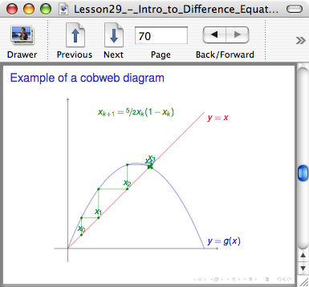
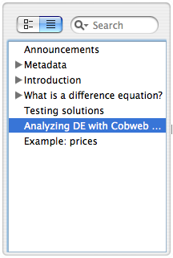

Teaching, Training, and Advising for the Harvard Mathematics Department. Oh, and some computer stuff.
I have left Harvard as of July 1, 2008 to take a position at
NYU.
This website has been cached and left static. Feel free to browse
my new website,
aka "What the heck is a Clinical Associate Professor?"
At the last web pedagogies lunch Michael Hemment told us about Edtags, a social-bookmarking service for educational resources. He’s also blogged about it here. it seems like a fun tool, and I think like to play with it, but I’m wondering if they’d be upset by the intrusion of an undergraduate educator.
But my main question is this: Why use this instead of del.icio.us? To me it seems like creating a search engine that focuses on pages about fishing. You can just add “fishing” to your search query in a real engine like Google and probably get better results. So why not use the same tags on del.icio.us and benefit from the larger community?
Update: Apparently TeachingHacks recommends just that.
As I wrote before, I’m a big fan of TeX4ht to convert (La)TeX documents to HTML and variants. One thing I liked was its professed configurability. So I gave it a whirl.
The HTML that TeX4ht isn’t quite perfect, still. It needs some help with tables, and if I use custom list styles they don’t carry over (although that might be a browser thing, now, come to think of it). So I wanted to insert two things into the HTML file: a <LINK> element in the document head indicating to any machine reader that the PDF version exists, and a note at the top of the document body indicating to any human reader that the PDF version exists and is more authoritative.
So here’s my linktopdf.cfg file, which I put in the same directory as the LaTeX file.
\Preamble{xhtml}
% You can put definitions here
\begin{document}
% This stuff goes in the <head> of the HTML document
\HCode{<link rev="alternate" media="print" xhref="\jobname.pdf" mce_href="\jobname.pdf" />}
\EndPreamble
% This goes at the beginning of the <body> of the document.
Note: This is an automatically generated HTML conversion of a LaTeX file, provided for convenience. The authoritative version is the \Link[\jobname.pdf]{}{PDF}PDF\EndLink\ version.
To compile a LaTeX file with this configuration use
$htlatex foo.tex "linktopdf" "" "-cvalidate"
and that ought to do it! I’d kind of like it to go after the title, rather than at the very beginning of the document, but that would take a little more reading of the configuration process. Advanced usage would be to give it a class and add CSS to the head that sets this paragraph in a different style
I thought for a while whether I wanted to use a LINK REL or a LINK REV declaration. The question is, is it more useful or correct to say the the PDF file is a printable version of the HTML, or that the HTML is a screen version of the PDF? Perhaps the latter, but i don’t exactly know which would make a machine go get the PDF instead.
I’m so glad that TeX4ht exists. It’s a suite of programs that convert TeX or LaTeX to one of many hypertext variants. You can generate HTML or XHTML, XML files readable by OpenOffice, JavaHelp, and others.
The mathematics in your document can be handled in various ways, too: the “normal” way of producing images for complicated formulas and inlining them to the document, or the “right” way of embedding MathML into the XML file. Unfortunately, the “right” way is not very well supported–not too many browsers read MathML yet. But it’s nice that tex4ht allows me to get by with this yucky kludge until it happens (if ever!)
A long time ago there was LaTeX2HTML for this purpose, and man, did I hate it. It was an impressive project, and sometimes I got it to work. However, I disagreed with the whole ethos of it. LaTeX2HTML uses perl to parse TeX files and generates an HTML file. Why do it this way? TeX already parses files and produces output in the form of a DVI file. What tex4ht does is attaches onto TeX’s parser and operates on the DVI file to make the conversion.
And then there’s the fact that tex4ht has so many options and is configurable. I’d like to learn more about configuring it well, but in a short time I was able to do one thing I wanted–link to the PDF in the HTML version.
One of the most useful little LaTeX packages is hyperref. In it normal use it doesn’t involve any new commands. However, it adds hyperlinks to references in the resulting PDF or HTML document.
This means if you use a PDFLaTex and this package, you get the bookmarked outline view of the PDF for free. Other references, like to the bibliography or to sections of the document, are now clickable as well. All this extra functionality for one line of code!


\usepackage{hyperref}
This is so useful it makes make want to re-LaTeX files I find that don’t include it.
I just posted this on a macworld thread, but i’ll republish it as a rant.
I have a Microsoft Natural Keyboard
Elite USB keyboard plugged into my PowerBook G4.
It’s been pretty good for my wrists, and it’s cheap, too.
I recently had to do a
pair of Archive and Install’s on the PowerBook, and I lost the kernel extensions
that made the Microsoft keyboard more like a mac (swapping alt and
command keys, etc).
I went to Microsoft’s download page
and they don’t have a listing for the Natural Keyboard Elite anymore.
The latest keyboard driver is Intellitype 6.2, though. I downloaded and
installed that, and even though I can click “swap alt and command” in
the preference panel, it has no effect. I’ve installed Intellitype 5.4, 6.0, 6.1, and 6.2, and all of
them aren’t working out-of-the-box.
I’ve also discovered that
when I select Keyboard Info from the Intellitype about window, it tells
me that no Microsoft Keyboards have been found. Why not? I repeat, this used to work.
I’m using doubleCommand now (uControl is another option), but what was
nice about Intellitype was it only went into effect when the keyboard
was installed. With the laptop on its own it would revert to normal.
Serena Rezny is speaking this week in the Undergraduate Mathematics Colloquium aka Math Table on laundry machines. Sounds like a fun practical math application that all undergraduates could learn from. Serena is the four-time π day recitation champion, having reached 1058 digits this most recent March 14.